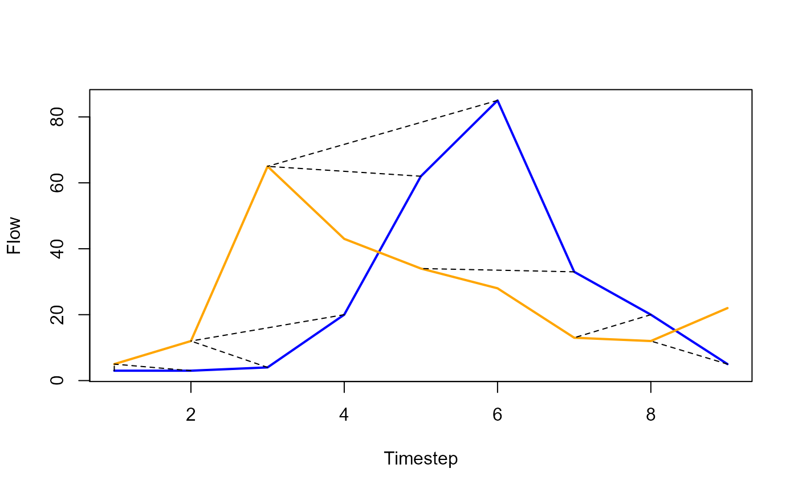

HMA.RdCreated from the John Ewen 2011 paper; "Hydrograph matching method for measuring model performance".
Three visual parameters (b, maxLag and maxLead) give the user flexibility when designing suitable performance measures.
HMA(
obs = NULL,
sim = NULL,
b = 4,
maxLag = 3,
maxLead = 3,
measure = "nse",
calcRays = TRUE
)Observed series
Simulated series
Scaling factor for timing errors, larger values degenerate into the NSE
Also known as w1, determines the number of time indices that be looked at from the observed backwards
Also known as w2, determines the number of time indices that be looked at from the observed forwards
Determines the objective
Option to calculate the rays for plotting. Set as TRUE.
qo <- c(3, 3, 4, 20, 62, 85, 33, 20, 5)
qs <- c(5, 12, 65, 43, 34, 28, 13, 12, 22)
a <- HMA(obs = qo, sim = qs, b = 4, maxLag = 1, maxLead = 3, measure = 'nse')
plot(qo, type = 'l', col = 'blue', lwd = 2,
xlab = 'Timestep',
ylab = 'Flow')
lines(qs, col = 'orange', lwd = 2)
for (i in seq_along(a$Rays)){
segments(a$Rays[[i]]$obs[1], a$Rays[[i]]$obs[2], a$Rays[[i]]$sim[1], a$Rays[[i]]$sim[2], lty = 2)
}
